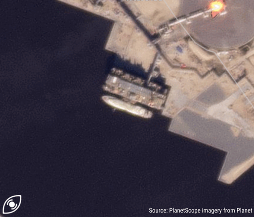
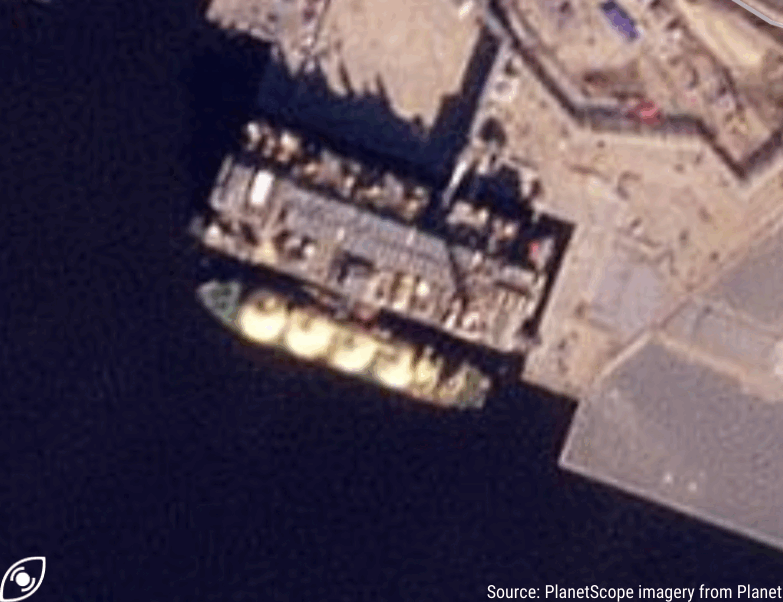
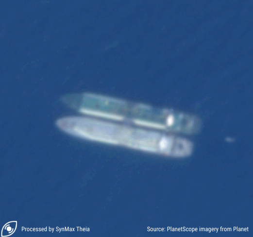

The Inception of Russia’s LNG Ghost Fleet
A SynMax Visual Deep Dive: How Russia-Affiliated LNG Vessels Spoofed and Loaded At the Sanctioned Arctic-2 LNG Export Plant
By Leslie Palti-Guzman & Vivek Patil
September 5, 2024
Russia Is Using Its Dark Oil ‘Expertise’ For Dark LNG
For years, the world has closely monitored Russia's shadow fleet of 600 oil tankers, that have skillfully evaded Western sanctions and continued delivering crude to willing buyers in defiance of international regulations. Now, a new phenomenon is emerging in the global maritime waters: the assembling of a Russia-affiliated “dark LNG” fleet. Much like the shadow fleet that reshaped the oil industry in recent years, this covert network could disrupt the liquefied natural gas (LNG) market with untraceable tonnes and illegal transactions.
SynMax Leviaton has tracked five conventional tankers Pioneer (IMO 9256602), Asya Energy (IMO 9216298), Everest Energy (IMO 9243148), New Energy (IMO 9324277), and Mulan (IMO 9864837) that may have joined Novatek’s “dark LNG fleet” based on suspicious AIS patterns, recent ownership changes, flag-hopping, and a calculated use of the Red Sea route. These vessels are suspected to be part of a coordinated effort to transport US sanctioned LNG from Russia’s Arctic-LNG 2 plant (ALNG2). As of August 23, 2024, the US Department of Treasury has also identified the first three tankers noted above (among others) as "secondhand LNG tankers" engaged in a number of deceptive shipping practices and as a result imposed sanctions against them.
Conventional LNG Tankers, Such As Pioneer, Will Help Russia Circumvent Sanctions
These are the Automatic Identification System (AIS) signals reported by 19-year-old Pioneer, a vessel built in 2005, with a capacity of 138,000 cubic meters of LNG, from 15th July to 6th August 2024. Formerly known as Pioneer Spirit, this tanker recently changed its flag from Singapore to Palau in April 2024. The journey of the Pioneer LNG tanker has become a focal point in the beginning of the dark LNG trade. SynMax Leviaton believes the vessel has been chartered by Russia’s private LNG producer, Novatek.
Pioneer Loads LNG From Arctic-LNG 2 With Covert Spoofing Tactics
On August 1, 2024, while its AIS signals suggested otherwise, the Pioneer was spotted docked at the sanctioned ALNG2 plant, located 800 miles away from the signals it reported. The tanker had arrived at ALNG2 after what appeared to be a well-coordinated spoofing operation, as detected by SynMax Theia.
Interestingly, Pioneer is a conventional tanker, not adapted for Arctic winter conditions. One of the largest hurdles facing Russia’s Novatek in exporting cargoes from the sanctioned ALNG2 project has been the shortage of ice-class shipping capabilities. The location of the export plant on the Gydan Peninsula requires Arc-7 vessels in winter to break through the ice and access the port. However, in summer, conventional tankers, like Pioneer, can offtake cargoes and sail west towards Asia via the Suez Canal or the Cape of Good Hope, bypassing the Northern Sea Route (NSR) which remains more accessible to ice class vessels, even in the warmer months.
Asya Energy Uses Similar Spoofing Methods
Another vessel, the Asya Energy (IMO 9216298), tells a similar tale of shadow ownership and spoofing patterns. Formerly known as Trader IV, this LNG carrier, built in 2002 with a capacity of 137,231 cubic meters, also switched flags from Liberia to Palau in May 2024.
Asya Energy Carries ALNG2’s Second Loading
On August 10, 2024, satellite imagery revealed the moss type spherical vessel Asya Energy quietly docked at the ALNG2 plant. However, according to its reported AIS data, the vessel was supposed to be over 700 nautical miles (800 miles) away. The vessel spoofed its location using false signals to mask its true whereabouts.
Everest Energy Gets The Third LNG Load
Along the same lines, from August 20 to August 26, 2024, the Everest Energy tanker engaged in a deceptive AIS spoofing operation, mirroring the maneuvers employed by the Asya Energy. For five days, its signals falsely indicated the vessel’s location far from the ALNG2 terminal, in waters near where Asya Energy had previously obscured its true position. However, on August 25, at approximately 18:00 GMT, the Everest Energy’s AIS data abruptly shifted, revealing its actual location at the ALNG2 terminal. Unlike previous spoofing efforts, the tanker did not attempt to conceal its movements after departing the plant, suggesting a deliberate move to reveal its true position after loading a cargo of LNG.
Novatek Uses More Sophisticated Deceiving Practices
The ‘art’ of spoofing consists of a vessel broadcasting a false location while conducting activities elsewhere, often tied to illegal or sanctioned operations. Russia’s spoofing tactics have quickly evolved, adapting to each operation. Unlike Pioneer, whose AIS signal patterns formed spherical or donut-like shapes that raised immediate red flags, Asya Energy's spoofed route seemed far more convincing, blending in more with legitimate marine traffic.
This sophistication raises a critical question: What makes LNG vessels "dark"? It’s not merely their association with sanctioned projects, but the deliberate masking of their movements through hiding and spoofing, that casts them into the shadows.
Arctic-LNG 2 Will Remain Under Chinese Life Support–Unless That Support Evaporates Too
In response to the growing evidence of spoofing activities, the US Department of the Treasury sanctioned seven LNG tankers affiliated with Russia on August 23, 2024, including Asya Energy, Pioneer, and Everest Energy—all identified by SynMax Leviaton as part of the dark fleet assembled by Russia’s Novatek to transport cargoes from ALNG2. These ships, a mix of older conventional vessels and newer Arc-4 ships, shared suspicious AIS activity, recent changes in flags, and shifts in ownership, further complicating efforts to track their movements.
Two Indian companies, Zara Holding and Ocean Star Speed Star Management, were also sanctioned due to their direct involvement with these vessels. Ocean Star Speed Star Management, a single-person operation registered 150 km from Mumbai in June 2024, has now emerged as a key player in this rapidly growing dark LNG trade network. Following the US sanctions, the Republic of Palau temporarily suspended the registration of three LNG vessels linked to this network.
Despite the US sanctions and scrutiny, the ALNG2 project has continued construction and operations, largely due to China’s involvement. The ALNG2 project, with a train 1 capacity of 6.6 million tonnes per annum (mtpa), was first sanctioned by the West following Russia’s invasion of Ukraine in February 2022. Chinese technology and financing have been pivotal in sustaining the project. China's ongoing delivery of prefabricated modules for Arctic-2 underscores its critical role. Additionally, China will probably be the main and sole destination for these cargoes, unless it is getting cold feet.
.png)
Suspicious Changes of Vessel Names, Ownerships, and Trade Routes
All the vessels in this fleet display a common pattern of frequent flag change and ownership transfers. For instance, Asya Energy, formerly known as Trader IV, has changed hands twice in recent years. The vessel was a familiar sight on LNG corridors between Nigeria, Spain, and France, reliably transporting cargoes from Nigeria LNG to Europe. In September 2023, Capital Gas purchased the carrier from Bonny Gas Transport for $35 million, renaming it LNG Rivers. However, just months later, in December 2023, the vessel was sold to UAE-based Nur Global Management.
Following this sale, the vessel’s trade route shifted. It was deployed on short-term routes between the UAE and Oman, delivering a cargo to Dahej, India, in early January, before continuing to shuttle between the UAE and Oman. In mid-June 2024, Asya Energy received bunker fuel via a ship-to-ship transfer with the bunkering tanker Margherita Cosulich (IMO 982505), as detected by SynMax Theia satellite imagery.
Russian Fingerprints All Over the Red Sea Crossing
The Asya Energy became the first LNG tanker in months to cross the perilous waters of the Red Sea, a region heavily disrupted by Yemen’s Houthi attacks on merchant vessels. On June 17, 2024, SynMax Leviaton detected the Asya Energy vessel heading towards the Bab-el-Mandeb Strait, one of the world’s most strategic—and now dangerous—shipping lanes. Recent drone attacks by the Houthis had heightened these risks, with one such strike having killed a crew member aboard a bulk carrier just days earlier.
Navigating this treacherous route might have been a calculated risk, potentially testing the waters for future voyages. There is speculation that Russia may have negotiated a deal with Yemen’s Houthis back in March, potentially allowing for “safe passage” through the Bab el Mandeb Strait. This remains a risky journey given the explosive nature of LNG and the narrow passage, but it highlights the lengths to which the Kremlin is willing to go.
Refueling, Waiting for Orders and Complex Logistics for Sanctioned Ships
The vessel continued its journey towards the Suez Canal, a critical juncture in global shipping. Just outside Port Said, Asya Energy engaged in another offshore bunkering operation, this time with the oil products tanker Vemahope (IMO 9477751).
From July 8 to 24, 2024, Asya Energy lingered in the waters near Tangier and Gibraltar—a familiar pattern observed among vessels linked to the same management company. These ships often bide their time in this location before proceeding to their ultimate destination: the ALNG2 plant.
Time Will Tell If The Expanding Shadow Fleet is a Dead Shell
The journey of Everest Energy (IMO 9323456), formerly known as Metagas Everest, also warrants attention as it became the second ship to cross the Red Sea this year, following the path of Asya Energy. Built in 2003 and now sailing under the Liberian flag, Everest Energy was chartered in early 2024. After sailing in ballast, it was stationed near Port Said, before lingering in the waters near Gibraltar and proceeding towards the ALNG2 plant. Like Asya Energy, Everest Energy also demonstrated a growing pattern of suspicious navigation and route choices.
Mulan, formerly Mulan Spirit, affiliated with the same UAE-based Nur Global, is another deviant tanker, currently stationed in the Gibraltar area.
The Dark Transfer of Pioneer and New Energy
After covertly transporting a cargo of LNG from ALNG2, the Pioneer (IMO 9256602) engaged in a dark ship-to-ship (STS) transfer with the New Energy (IMO 9324277) on August 25, 2024. The transfer took place 30 km northeast of Port Said, Egypt, with Pioneer spoofing its location 72 km northwest of the actual transfer site. Meanwhile, New Energy had gone dark on AIS since August 23, last appearing just 3 km away. This location, typically used for oil tanker transfers, presents a rare and risky setting for LNG operations, particularly in open waters without assistance. Any mishap could have fatal consequences for the crew.
Interestingly, prior to this encounter, New Energy may have conducted a practice STS with Everest Energy between August 6 and 7 in the same area north of Port Said. Given that LNG tankers typically require additional personnel and equipment for STS operations, it is possible that New Energy had been preparing for this significant transfer with Pioneer.
Asya Energy Abruptly Changes Course
On August 21, 2024, Asya Energy, which had been steadily sailing near southern Norway with a cargo from ALNG2, suddenly reversed its course. This unexpected maneuver occurred just days after the US imposed sanctions on the vessel and Palau suspended its flag. It’s likely that the vessel, now essentially a rogue ship without a flag, sought a safe haven to avoid potential seizure or interception. By August 24, 2024, Asya Energy had reached Kola Bay, positioning itself near the Saam floating storage unit (FSU), where it remained stationary before turning off again its AIS on September 3rd.
The Sanctioned Floating Storage Units Will Be Part of The Shadow Logistics
On August 29, 2024, Everest Energy was detected near the sanctioned Saam FSU, approximately 50 kilometers from Murmansk. The vessel, carrying a load from the ALNG2 plant, was involved in a STS. Theia imagery showed that Everest Energy remained alongside Saam until departure on September 2 to return to ALNG2.
The Saam FSU, a 361,600-cbm storage unit owned by Novatek, has become a focal point in Russia’s dark LNG trade. This floating storage unit was sanctioned by the US Department of State on September 14, along with its counterpart, the Koryak FSU. Both units– strategically positioned off Murmansk and southern Kamchatka–are now under scrutiny. While their future utilization remains uncertain, SynMax Leviaton data indicates that these units could play a crucial role in facilitating Russia’s sanctioned LNG operations.
 (1).png)
The Rise and Fall of Russia’s Dark LNG? Too Early To Say
As of September 5, 2024, no customer has picked up the cargoes leaving the LNG molecules either boiling off in a tanker in the East Mediterranean or sitting idle in an Arctic floating storage unit. However, the real test for Western governments will be tracking these transfers and swaps even after global attention wanes. The best-case scenario would see a successful, early enforcement of sanctions that stifles the emerging sanctioned trade before it fully develops. In contrast, the worst-case scenario involves a more defiant Russia, engaging in riskier STS, one of which could go disastrously wrong, sending shockwaves through the entire LNG industry.